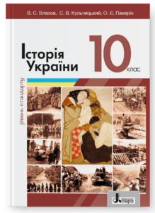
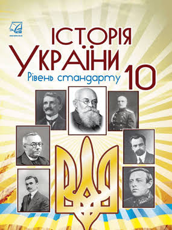

Про мій проєкт
Це каталог шкільних підручників з історії України. Тут зібрані книги для різних класів.
Це каталог шкільних підручників з історії України. Тут зібрані книги для різних класів.

Автор: О. Власов, С. Кульчицький
Рік видання:
Підручник для 10 класу закладів загальної середньої освіти.

Автор: В. Власов, С. Кульчицький
Рік видання:
Підручник для 10 класу з поглибленим вивченням історії.